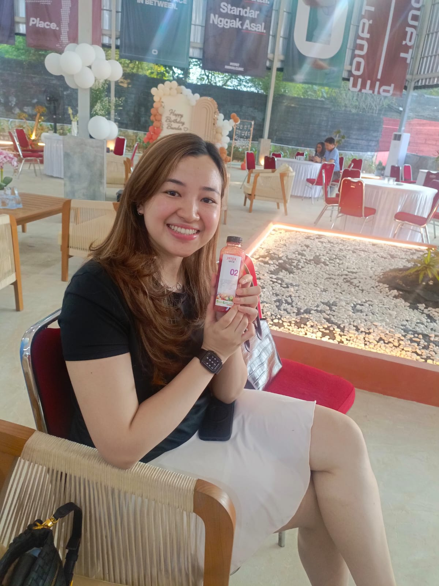
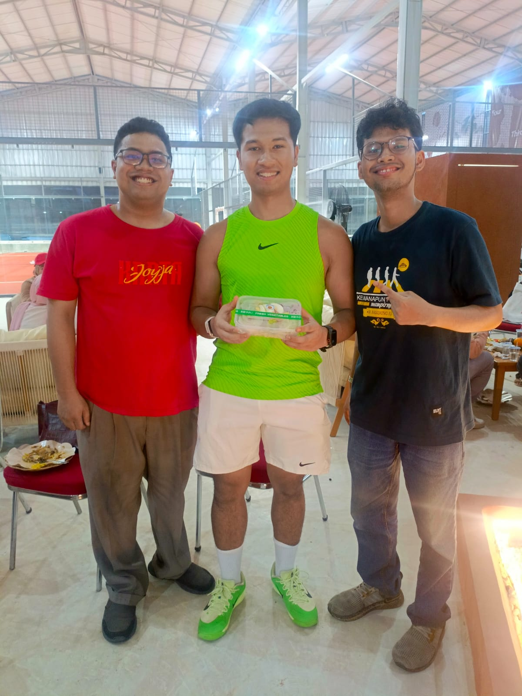
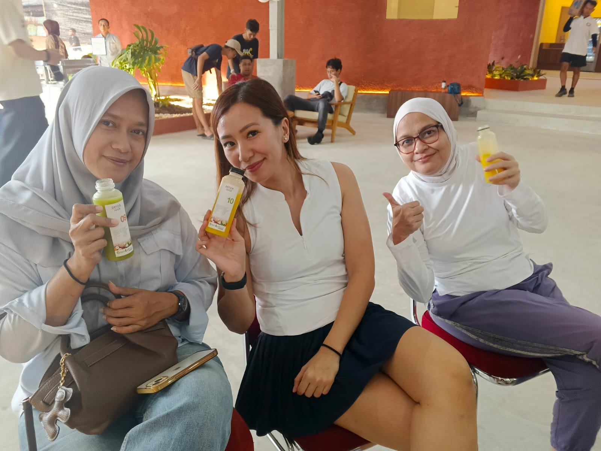

Nikmati kelezatan pastry renyah dan lembut serta fresh juice sehat setiap hari.
Mengenal lebih dekat roti tradisional berkualitas tinggi
Sourdough adalah roti yang dibuat menggunakan biang alami (starter) dari campuran tepung dan air yang difermentasi dengan ragi liar dan bakteri baik. Proses fermentasi yang berlangsung lebih lama menghasilkan cita rasa sedikit asam yang khas, aroma alami, serta tekstur lembut di dalam dan renyah di bagian luar.
Kunci kelezatan dan kesehatan sourdough terletak pada sourdough starteryakni adonan fermentasi alami yang berisi campuran tepung dan air yang ditumbuhi oleh bakteri baik (Lactobacillus) dan ragi liar dari lingkungan sekitar. Proses fermentasi alami inilah yang memecah gluten secara alami, membuat roti jauh lebih mudah dicerna dan kaya nutrisi.
Segar setiap hari, Hidup lebih sehat !


Kenangan manis dan kehangatan dari dapur kami


